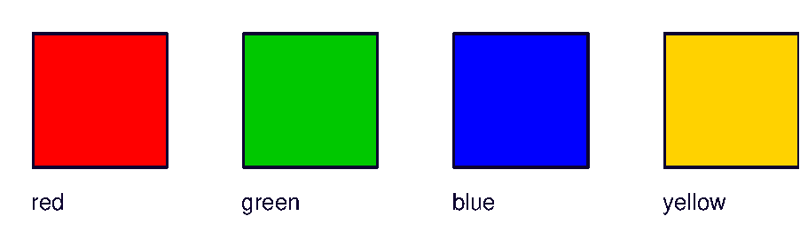

Глава 7 · Глубокое погружение в Turtle
colormode и цвет
Название, HEX-код или тройка чисел RGB — три способа сказать Turtle одно и то же: «вот этот цвет».
Мы уже задавали цвета по имени — "purple",
"gold". Но у Turtle есть и числовой способ — через компоненты
красного, зелёного и синего (RGB).
Два режима: 0.0–1.0 и 0–255
screen.colormode() определяет, в каком диапазоне
записываются числа RGB:
| Режим | Диапазон каждого числа | Пример красного |
|---|---|---|
colormode(1.0) (по умолчанию) | 0.0 — 1.0 | (1.0, 0.0, 0.0) |
colormode(255) | 0 — 255 | (255, 0, 0) |
colormode_kod.py
screen.colormode(255)
artist.pencolor(255, 0, 0) # красный, компоненты 0-255
screen.colormode(1.0)
artist.pencolor(1.0, 0, 0) # тот же красный, компоненты 0.0-1.0Числа вне диапазона — ошибка
Если установлен
colormode(1.0), а вы передадите (255, 0, 0) — Turtle не поймёт, что вы имели в виду красный: 255 вне диапазона 0.0–1.0, и будет ошибка. Режим и числа должны совпадать.RGB-палитра целиком
rgb_svatchi.py
import turtle
screen = turtle.Screen()
screen.setup(width=460, height=200)
screen.colormode(255)
artist = turtle.Turtle()
artist.hideturtle()
artist.penup()
swatches = [
((255, 0, 0), "red"),
((0, 200, 0), "green"),
((0, 0, 255), "blue"),
((255, 210, 0), "yellow"),
]
x = -170
for color, label in swatches:
artist.goto(x, 0)
artist.fillcolor(color)
artist.pencolor("#0D0230")
artist.pendown()
artist.begin_fill()
for _ in range(4):
artist.forward(70)
artist.left(90)
artist.end_fill()
artist.penup()
artist.goto(x, -25)
artist.write(label, font=("Arial", 12, "normal"))
x += 110
screen.exitonclick()Результат выполнения

rgb_svatchi_kod.py
screen.colormode(255)
artist.fillcolor(255, 0, 0) # красный
artist.fillcolor(0, 200, 0) # зелёный
artist.fillcolor(0, 0, 255) # синий
artist.fillcolor(255, 210, 0) # жёлтыйТри способа задать один и тот же цвет
| Способ | Пример | Когда удобно |
|---|---|---|
| Название | "red" | быстро, для стандартных цветов |
| HEX-код | "#FF0000" | точный оттенок, как в CSS/дизайне |
| RGB-кортеж | (255, 0, 0) | когда цвет вычисляется в коде (например, случайный) |
Не углубляемся в теорию цвета
Этого достаточно для практики этой главы. Как RGB устроен «под капотом» — тема для отдельного курса по графике, а не для этой книги.
Практика: colormode и RGB
Модуль turtle открывает нативное окно Python — выполните локально в VS Code, PyCharm или Jupyter